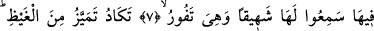
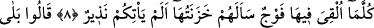
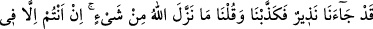
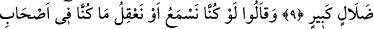
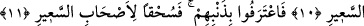

NEREDEYSE CEHENNEM
ÖFKESİNDEN ÇATLAYACAK!
6. Rablerini inkâr edenler için cehennem azâbı vardır. O, ne kötü dönüştür!
7. Oraya atıldıklarında, onun kaynarken çıkardığı uğultuyu işitirler.
8. Neredeyse cehennem öfkesinden çatlayacak! Her ne zaman oraya bir topluluk
atılsa, onun bekçileri onlara: Size, (bu azap ile) korkutucu bir peygamber gelmemiş
miydi? diye sorarlar.
9. Onlar şöyle cevap verirler: Evet, doğrusu bize, (bu azap ile) korkutan bir
peygamber gelmişti; fakat biz (onu) yalan saymış ve: Allah’ın bir şey gönderdiği
yok; siz olsa olsa büyük bir sapıklık içindesiniz! demiştik.
10. Ve: Şâyet kulak vermiş veya aklımızı kullanmış olsaydık, (şimdi) şu alevli
cehennemin mahkûmları arasında olmazdık! diye ilâve ederler.
11. Böylece günahlarını itirâf ederler. Artık (Allah’ın rahmetinden) uzak olsun, o
alevli cehennemin mahkûmları!
Şeytanlardan ve onların dışında başkalarından “Rablerini inkâr edenler için
cehennem azâbı vardır.” Bunların inkârları ya ta’til ya da imsak sûretiyle olur. Sa’dî
Müftî der ki: Kuvvetli olan ihtimal bu âyetteki inkâr edenlerin şeytanların dışındaki
kâfirler olarak anlaşılmasıdır. Nitekim âyetin daha sonraki ifâdeleri buna işâret
etmektedir. Sonra âyeti bu şekilde yorumlarsak tekrar şâibesi de ortadan kalkmış olur.
“Cehennem azâbı” ifâdesinden maksad, cehennemin tabakalarından birisidir ki her
tabaka ilgili olan kişiyi asık bir suratla ve korkunç bir yüzle karşılar. “Cehennem”
kelimesi “asık yüz” ifâdesinden türemiştir. Burada Allah Teâlâ’nın azâbının ve
intikamının kılıç, kamçı, sopa vb. herhangi bir bilinen araç vâsıtasıyla olmaması
dolayısıyla alışılan ve bilinenlerin dışında olduğuna işâret edilmektedir. Tam tersine
onun azâbı hiçbir zaman sönmeyecek olan ateşle olacaktır. Kâfirin bu azaptan
kurtulmaya hiçbir ümidi olmaz “O” cehennem “ne kötü dönüştür!”